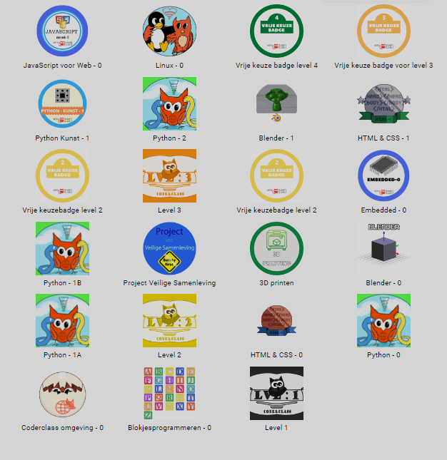

portofolio - Robin Klaassen
In dit portfolio wil ik graag mijn coderclass voortgang delen met jullie
ik ga het hebben over:
-wie ben ik
-mijn badges
-een project
-mijn contact
wie ben ik
Hey, ik ben Robin Klaassen, een 14-jarige leerling in 3v2 op het Metis Montessori Lyceum.
Ik draai nu al drie jaar mee in de coderclass en het is een interessante rit geweest.
Sommige onderdelen hebben echt mijn interesse gepakt en dagen me uit op een leuke manier.
Maar eerlijk gezegd zijn er ook dingen die me wat minder liggen. Desondanks kijk ik uit naar de toekomst van mijn coding avontuur en hoe ik mijn vaardigheden verder kan aanscherpen.
Mijn tijd op het Metis Montessori Lyceum heeft niet alleen mijn academische kant gevormd, maar ook mijn persoonlijke groei gestimuleerd.
Op naar meer uitdagingen en ontwikkeling, zowel in mijn opleiding als in mijn passies!
badges
in mijn drie jaar in coderclass heb ik deze badges gedaan!
sommige vond ik leuk zoals blender en javascript, maar andere zoals html, datareprensatie en python vond ik wel wat minder

project
Bij Metis doen we elk jaar een project waar we dingen uit dat jaar moeten toepassen.
Vorig jaar moesten we een coole kamer maken voor studenten, met 3D-modellen en printen, plus een website bouwen.
We leerden 3D-dingen en maakten milieuvriendelijke kamers.
De website liet zien wat we deden.
Het was hands-on en leerzaam, en liet zien hoe je slimme dingen kunt doen met wat je hebt geleerd.
Cool, toch?
contact
als je nog meer vragen of dingen wilt weten dan kan je contact opnemen via 27489@edu.msa.nl of via 06987654321.